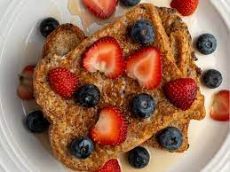

Protein French Toast

Description
This recipe is perfect for people who are trying to eat healthier and with lower calories but do not want to give up on the favourite french toast
Ingrediants
- Egg whites
- Cinnamon
- Vannilia extract
- Some sort of artificial sweetner
- Protein poweder(optional)
- regular or high protein bread
- any type of fruit(optional)
Steps
- Mix the egg whites, cinnamon, vanillia extract and sweetner in a bowl.
- Put some slices of bread in the bowl(as much as the bowl can fit) and hold them for a few seconds(let them soak up).
- Set the heat to low and put some oil so the bread does not stick to the pan.
- Put the bread on the pan and let it stay for around 5 minutes on each side.
- After you have made all of them you can add some fruits on top and you have a nice and healthy breakfast.